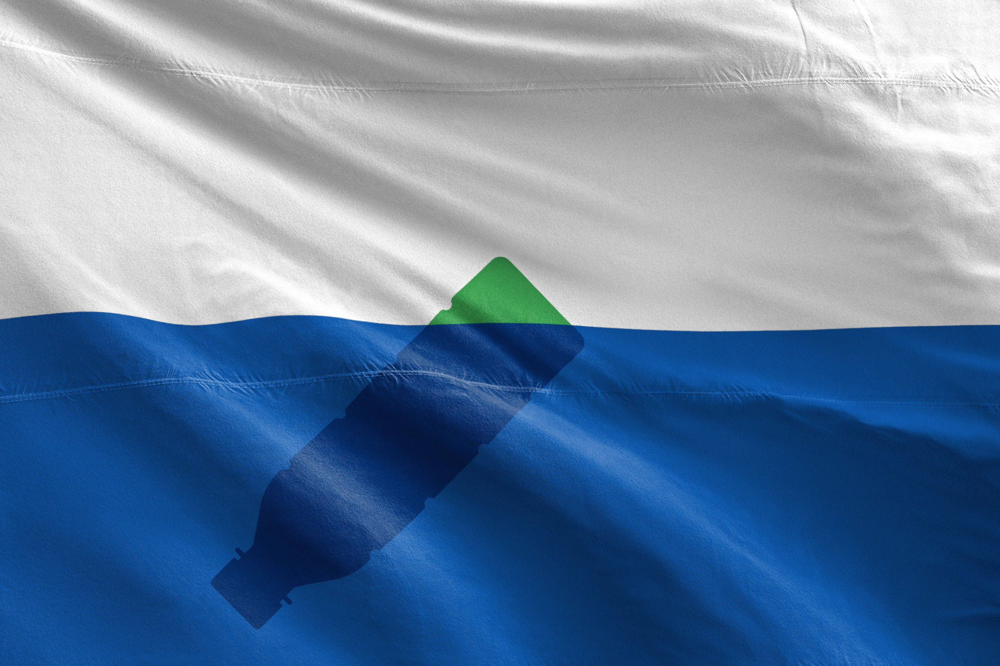
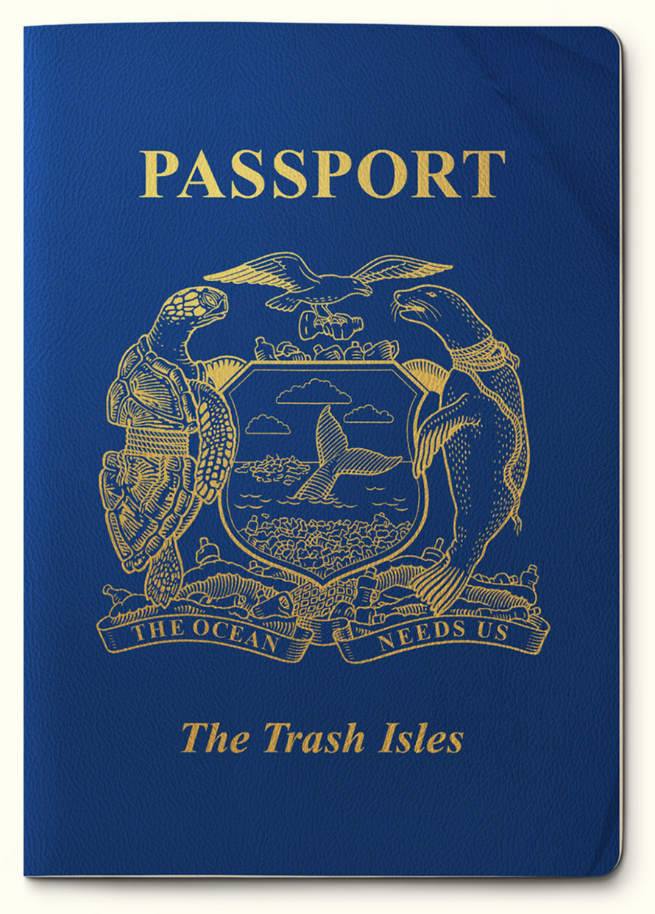
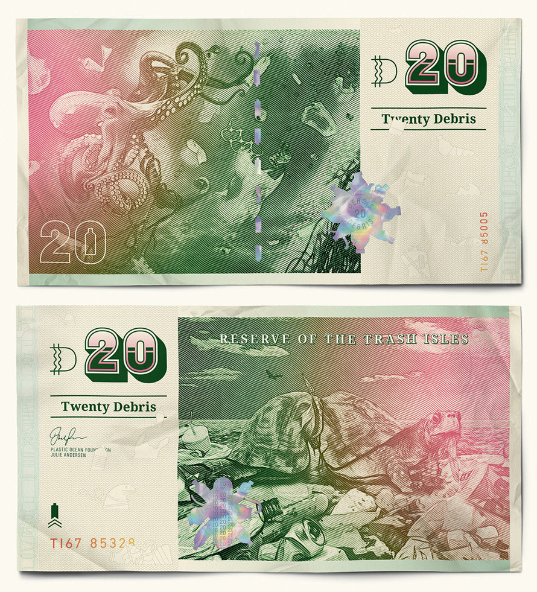
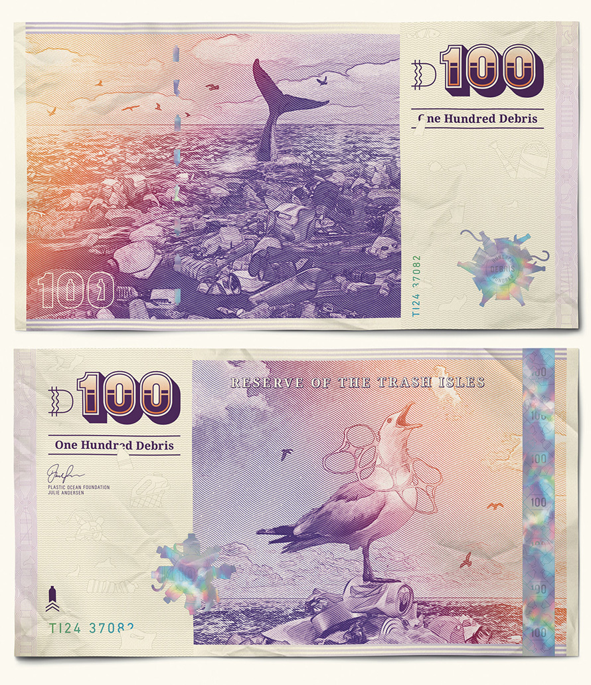
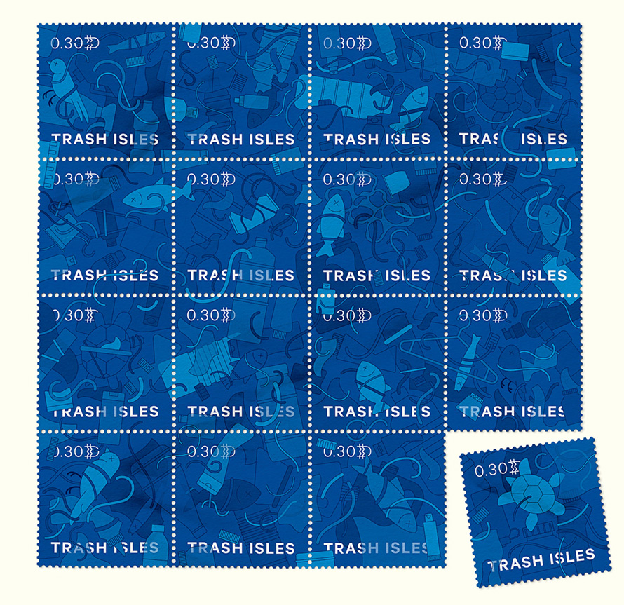

The Trash Isles: An official country
We wanted to come up with a way to ensure world leaders can’t ignore it anymore, a way to stick it under their noses, literally,
8 million tons of plastic garbage end up in the oceans each year, killing 1 million sea birds. That’s a reality. “Great Pacific Garbage Patch”, also known as the Pacific Trash Vortex is a gyre of marine debris in the central North Pacific Ocean. Discovered in 1997 by Captain Charles Moore, the massive dump of floating garbage is hard to accurately measure but is said to be twice the size of France. Two advertising creatives came up with the idea of imagining the « Trash Isles » an official country recognised by the United Nations.
And, now we have our coutry flag, passport, money, and postage stamps!




